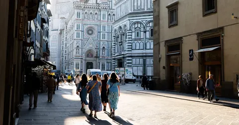

I write in Malayalam, walk around with a camera, and build small tools I wanted to exist. For a living, I plan how very large things get built.
I was born in Kodungallur and grew up in Koolimuttam, a village on the Arabian Sea, which is still what I mean by home. Engineering took me to Thrissur and then to IIT Madras. After that came construction sites: nearly four years in Bastar, where the rain runs into September and the forest turns a green I still can't describe; then Assam, Odisha and Bangalore, where a Honda H'ness took me up into the hills most weekends. Now I'm in Milan, with stretches in Wales and in Kerala, and the work has grown from buildings to whole plants on the other side of the world.
The writing came first and never stopped: notebooks, then a blog, then Facebook, and three books. The camera came later, mostly as an excuse to slow down and look properly. The tools came last: a radio that plays 2,200 stations, a news page that goes down to my own town, a film finder, a guide to life in Milan, things for the working week. I built them for myself and left the door open.
Everything I created here — the writing, the photographs and the tools — is free to read, use and copy. ♡ Copying is an act of love.
Say hi — hello@ranjithkb.com →
- Movie FridayA free email every Friday at 8am: the week's new films in UK cinemas, and how last week's are rating.
- Expat Life Saver: MilanPermits, homes, health, driving, gyms, food and people, one page per topic.
- English Cinema in ItalyOriginal-version films in Milan and across Italy, with times and booking links.
- MoviesFind any film, even misspelt. Every rating side by side, streaming dates, and what to watch next.
Photography
Street and travel photography, by place and month. More places as I get to them.
View frames →Publications
Three books and one paper from graduate research. Two of the books are free to download.
See publications →Padolpathi പദോൽപത്തി
Where Malayalam words come from: Sanskrit, Persian, Tamil, Portuguese and older roots.
Explore words →Radio
Over 2,200 live stations in more than 70 languages, each tested twice a day, with favourites and a sleep timer.
Tune in →News
Trusted, independent papers in the languages you choose, from the world down to Thrissur, Swansea or Qidong. New every two hours.
Read the news →Movies
Any film in any language, spelling optional. IMDb, Rotten Tomatoes, Metacritic and TMDB together, OTT dates, and similar films.
Find a film →English Cinema in Italy
Films in original version with Italian subtitles, in Milan and other cities. Today and the coming week, with booking.
See what's on →Expat Life Saver
City guides for people moving abroad, starting with Milan: permits, homes, health, transport and everyday life.
Open the guide →Trip planner
Pick a place, a date and how you get around. Each day comes in walking order, with opening hours, tickets, weather and a map.
Plan a trip →Tools for the working week
Free, and they run in your browser: your files and plans stay on your device.
- Meeting time finderTime zones and working hours
- Timeline & GanttPlans to Excel, PDF or image
- RACI matrixWho does what, at a glance
- PDF toolkitMerge, split, sign, OCR
- Passport photo makerVisa photos and print sheets
- Oil & gas unitsLNG, gas, oil and energy
- Map colourerColour countries and regions
- Malayalam keyboardMalayalam typing on iPhone